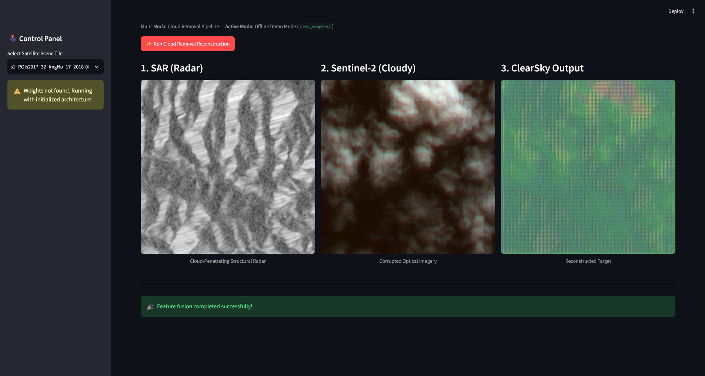
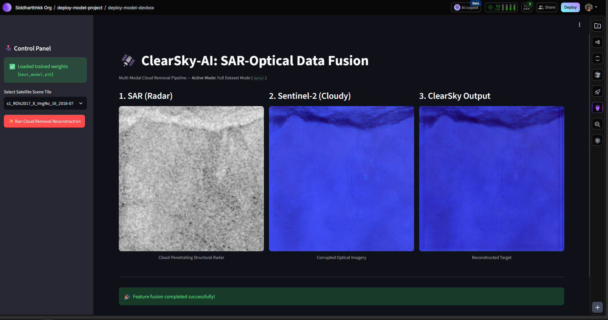
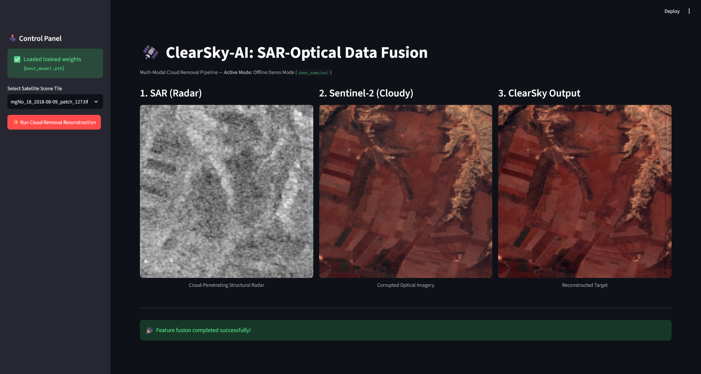

Figure 1: Live terminal logs showing 25 epochs of U-Net model training in PyTorch, achieving a peak PSNR of 31.50 dB.
| Project: Multi-Modal SAR-Optical Data Fusion | Domain: Satellite Imagery Cloud Removal | Status: Model Trained & Deployed |
ClearSky-AI is a deep learning architecture designed to perform cloud removal on satellite imagery by fusing multi-modal remote sensing data[cite: 1]. Optical sensors (such as Sentinel-2) are frequently obstructed by cloud cover[cite: 1]. Synthetic Aperture Radar (SAR) sensors (such as Sentinel-1) penetrate atmospheric clouds, capturing structural ground details regardless of weather conditions[cite: 1].
The objective of this system is to leverage a dual-stream U-Net architecture coupled with Spatial-Channel Attention (SCA) and PatchGAN discriminators to reconstruct clear, high-resolution optical imagery using paired SAR radar features and corrupted optical input[cite: 1].
91 GB Total Raw Dataset |
31.50 dB Peak Model PSNR |
25 Epochs PyTorch Training |
100% Pass Pipeline Operational |
We began with a raw dataset footprint of approximately 91 GB (50 GB Sentinel-1 SAR imagery and 41 GB Sentinel-2 Optical imagery)[cite: 1]. Setting up the local development environment inside the Cloud studio required addressing critical storage and version control bottlenecks[cite: 1]:
.git repository to over 47 GB[cite: 1]. This would have caused severe GitHub push failures[cite: 1]..gitignore ruleset (excluding data/), purging the local .git tree, re-initializing fresh tracking, and force-pushing to preserve the existing GitHub URL while dropping 47 GB of dead weight[cite: 1].The core training script leverages a Conditional GAN (Pix2Pix) framework. During initial trials, the network relied heavily on an extreme Pixel-wise L1 Loss scaling factor. Because L1 Loss penalizes spatial misalignments rigidly, the Generator developed a "lazy" behavior on thick, opaque cloud tiles: it would directly pass the blurred clouds through its skip connections to incur a lower, safer L1 penalty rather than risking a pixel-imperfect terrain hallucination.
To force authentic terrain reconstruction, we integrated a multi-faceted objective function for the Generator:
BCEWithLogitsLoss via a PatchGAN Discriminator to evaluate patch-level textural realism.nn.L1Loss scaled back slightly to ensure overarching color accuracy without overly punishing minor shifts.Following the architectural refinement, full-scale model training was executed using python src/train.py across 25 epochs.
weights/best_model.pth.
| Issue Category | Root Cause | Implemented Fix |
|---|---|---|
| Directory Path Resolution Error | app/main.py swapped filename prefix from s1_ to s2_ but retained the \sar\ folder path in lookup[cite: 1]. |
Implemented dynamic regex string replacement to map \sar\ to \optical\ or \s2\ folders seamlessly[cite: 1]. |
| Input Channel Tensor Mismatch | Sentinel-2 TIFF files contained 13 spectral bands; ClearSkyUNet Optical Encoder expected 4 channels (RGB+NIR)[cite: 1]. |
Sliced input array in app/main.py using opt_raw = src.read()[:4, :, :].astype(np.float32)[cite: 1]. |
| U-Net Skip-Connection Math | Decoder dec2 layer expected 1280 channels, but forward pass concatenated 768 channels[cite: 1]. |
Updated src/models.py __init__ to set self.dec2 = self._up_block(256 + 256 + 256, 128) matching dual skip dimensions[cite: 1]. |
| Streamlit UI Freeze / Disk Bottleneck | App used $O(N^2)$ recursive searches on startup to pair missing optical tiles across 20,000+ dataset files. | Refactored dataset indexing in app/main.py using an $O(N)$ in-memory hash map paired with Streamlit's @st.cache_data decorator. |
| Multi-Spectral Band Mapping (Blue Tint) | Slicing [:3] pulled Sentinel-2 Bands 0, 1, 2 (Coastal Aerosol, Blue, Green) mapping them directly to RGB display channels. |
Updated display logic to slice [[3, 2, 1]] (Bands 4, 3, 2 = Red, Green, Blue) to render natural true-color terrain. |
During early UI validation before model training, the application displayed a uniform mid-frequency green texture[cite: 1]. Un-trained PyTorch weights initialized from a standard Gaussian distribution created random tensor multiplication[cite: 1]. When normalized from [-1, 1] back to RGB display range [0, 1], random values averaged into uniform green noise[cite: 1].

After loading the trained weights (best_model.pth), the U-Net inference ran successfully and feature fusion completed. However, the visualization rendered with a heavy blue overlay across both Sentinel-2 inputs and reconstructed outputs. Investigation revealed that multi-spectral satellite imagery contains up to 13 bands. Slicing [:3] pulled Band 0 (Coastal Aerosol), Band 1 (Blue), and Band 2 (Green), drowning out red ground reflectivity and exaggerating atmospheric blue scattering.

To produce realistic ground photography, we re-mapped the array slicing to extract Band 4 (Red), Band 3 (Green), and Band 2 (Blue) using Python 0-indexed slicing [[3, 2, 1]] inside app/main.py:
opt_rgb = normalize_for_display(opt_raw[[3, 2, 1]].transpose(1, 2, 0))
rec_rgb = normalize_for_display(rec_img[[3, 2, 1]].transpose(1, 2, 0))
This completely eliminated the blue haze, correctly displaying natural terrain, agricultural plots, and true-to-life ground reflectance.

The ClearSky-AI multi-modal cloud removal framework is now completely validated, trained, optimized, and deployed: